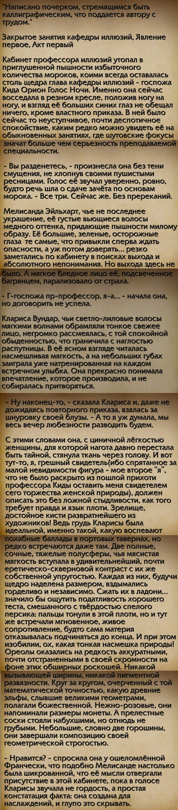
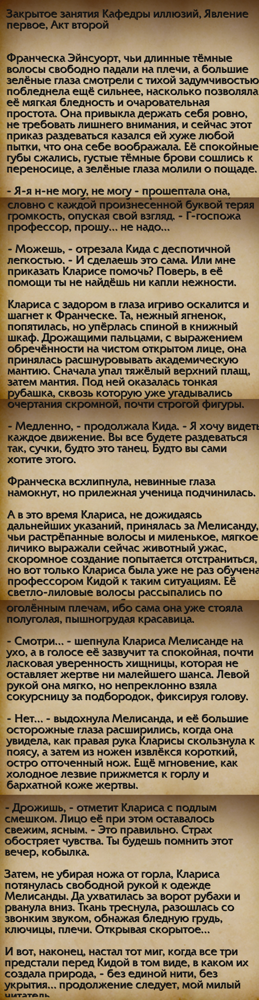
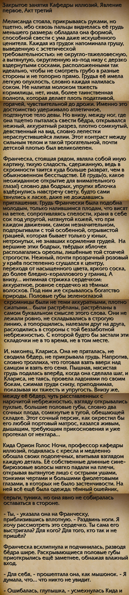
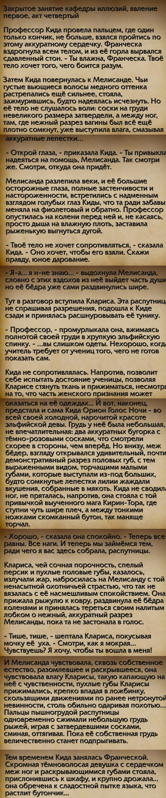
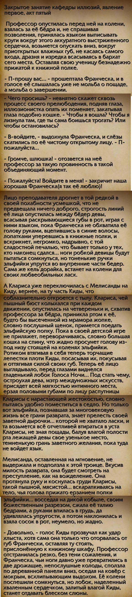
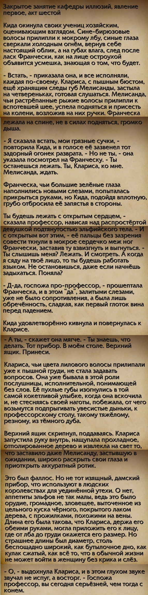
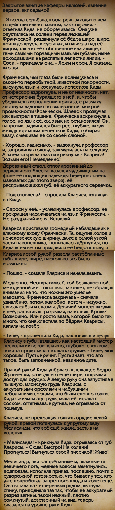
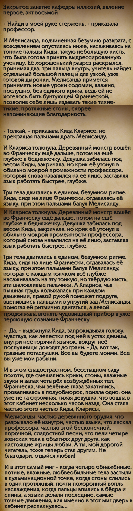
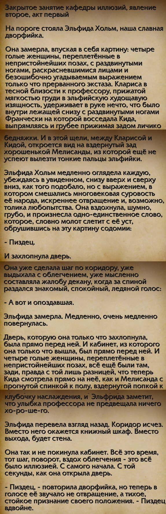

Букводрочеры Даларана
WerewolfCarrie, похоже, упала в ностальгию по проникающим в попочки паладинов рыцарям смерти, и решила тряхнуть своей стариной и напомнить о своём виртотеатральном образовании. Не знаю, чему сильнее аплодировать — её аутизму, даровавшую нам +100500 строк кам-тента, или же аутизму её почитателя, скринившего и сшивавшего это воедино. Как жаль, не нашлось третьего аутиста, чтобы править ими всеми, и перепечатать это текстом.
Вы спросите: «А как же остальные высеры?», я же отвечу: «Жалкие подражатели. Второй вообще не смог выдавить из себя ничего, кроме огалделой мизантропии (а для этого у вас есть RPH), а третий за неимением собственного видения просто вдохновлялся нетленочкой — да и там жался, как девственница на сеновале, чтобы оборвать поток своей графомании на только-только начавшейся завязке с крысой.
{kind=link}









А теперь, когда вы насладились этим шедевром, можете смело идти в профиль автора и поставить ему лайк. Он это заслужил.
На сём я кончил. Вытрите с доски.